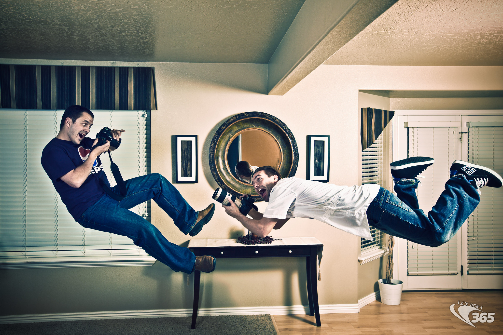
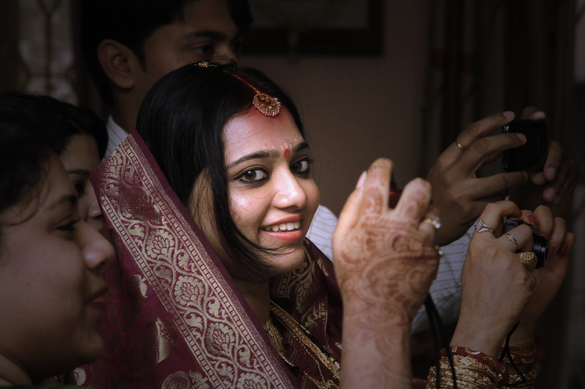
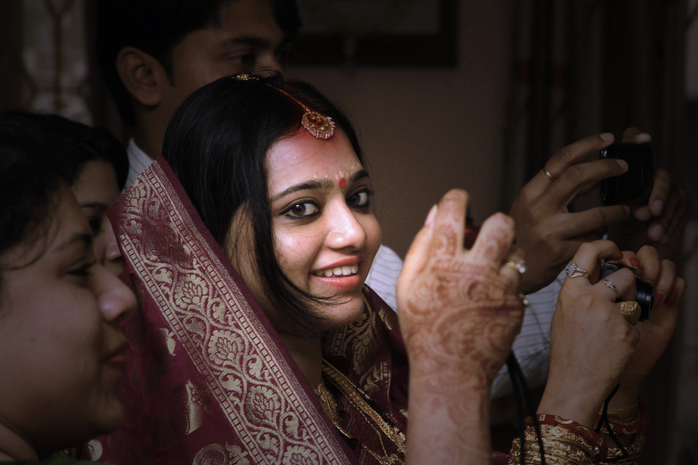

Photography is an incredible medium that allows artists and hobbyists to express themselves and capture fantastic moments. Photojournalists and artists use light, color, and composition (where the subject sits in the frame) to create brilliant images that tell exciting stories. Many famous photographers are white men, so I wanted to focus the history part of this site on women and photographers of color.
Over the years, I've had several expreiences taking portraits, sports photographs, and taking pictures of my travels and I've read a lot about how to improve my photography. Different types of images require different different equipment, timing, and camera settings for the best pictures possible. I'll share some best practices along with my own expriences and photographs to give context to the pictures.

 
